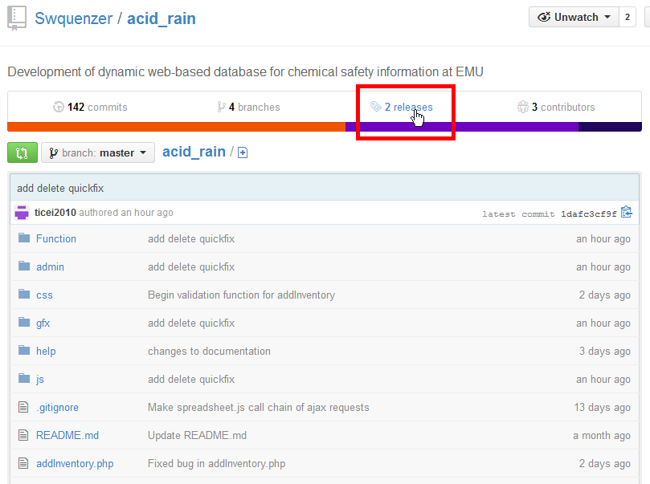
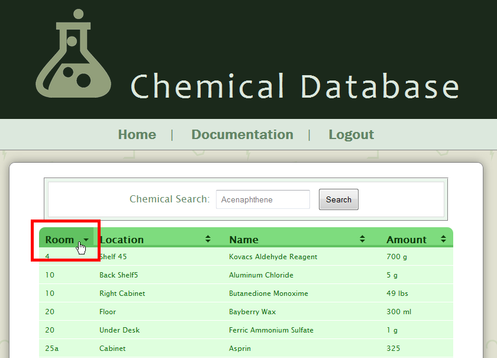

1.0 - Introduction
AcidRain is a project that intends to improve the efficiency and convenience of the Chemical Safety Sheet process by placing all Chemical Safety Sheets (CSS) along with their connections to the corresponding Material Safety Data Sheets (MSDS) on a dynamic database whose interface is accessible to all authorized personnel, allowing for a more effective way of storing data. This database and its interface will also give authorized users that ability to control and modify the database as the needs arises. The database interface is designed for use by our local EMU Science Department as well as the Harrisonburg Fire Department in case of emergency.
2.0 - Summary
In short, AcidRain provides a convenient way for schools, business, and organizations to store and dynamically view and modify chemicals in an orderly fashion.
2.1 - Environment
The following Users, or Actors, will be present in the AcidRain environment:
2.1.1 - Developers
These are the AcidRain team, namely Isaac Tice, Stephan Quenzer, and Josiah Driver. Their role is to plan, create, analyze, implement, install, modify, verify, document, deploy, and maintain the software in its environment. They also interact with selected, intended users to discover and clarify user requirements and specifications.
2.1.2 - Modifiers
These are EMU students or faculty who are given access to the database interface with the ability to not only view data but insert new data as well as correct, edit, and delete existing data.
2.1.3 - Viewers
These are those who for any reason wish to view the data, for example, the Harrisonburg Fire Chief, but are not given authority to modify it.
2.1.4 - Constraints
Acid Rain has the following constraints: It must be user-friendly, it must be efficient and functional, and it must be secure. It will assume the EMU Science department will take care to only authorize the correct personnel and take care of the software piece responsibly. It will depend on the EMU server system and, as it will use primarily PHP, JavaScript, HTML5, MySQL, and such, it will also depend on an Apache Server to be functional. Acid Rain will place its binary and other code files on Github and use the Github revision control system to organize and store our source code.
A link to our repository can be found here:
3.0 - Getting Started
AcidRain is intended to be a cross-browser, cross-OS piece of software. It runs on an Apache server and uses a MySQL database. As a result, in order to run AcidRain on your machine, you will need to have an Apache server, a PHP engine, and a MySQL database engine installed on your machine. If you already have these installed and running, jump to Installation.
3.1 - System Requirements
AcidRain was developed on PHP 5.3, Apache 2.2, and MySQL 5.0. We recommend that you install that latest version of each of these pieces. Though we believe that AcidRain should work on any AMP package with PHP 5.3 or later, Apache 2.2 or later, and MySQL 5.0 or later, we do not guarantee It will work on other versions. If, ultimately, you cannot get this to work on other versions, please attempt using the older versions.
AcidRain is designed to be run inside a browser (Internet Explorer, Firefox, Google Chrome, etc.) like a webpage. You will need an Apache-MySQL-PHP (AMP) package installed on your machine for AcidRain to be functional. Depending on the build of your machine, there are different free available software packages to accomplish this goal:
3.1.1 - Windows
If you are running a windows machine, probably the best AMP package you can get is called WampServer. You can download the software from this page as well. You will need to install this software on your machine before you can continue. Installation instructions can be found here.
Another AMP package for Windows is entitled EasyPHP. This is a portable package, enabling it to be "picked up" and moved from machine to machine. You can download this server package from this page as well.
3.1.2 - Mac
If you have the Mac OS installed on your machine, you will need to download and install MAMP. You can download the it free from this page. You will need to install this software on your machine before you can continue. Installation instructions can be found here.
3.1.3 - Linux
If you are running Linux, there are no strong, well-known, easy software packages to install (except BitNami, see below), but instructions for building a LAMP server on Linux can be found here as well as here.
Another cross-platform option for those interested is BitNami. The BitNami Lamp Stack can be downloaded here.
3.2 - Installation
Once you have an AMP package installed and running on your machine, you will need to download and install AcidRain onto this server. Go to our repository and click on the "release" link to view the release list. Download the latest release:

Extract all the contents onto the root-file system of your server (your AMP package). You can either place the contents directly in the root directory (so that they can simply be accessed in your browser by typing "http://localhost/") as such:

Or you can place them in a subdirectory if you wish (for example, we recommend you create a subdirectory entitled "AcidRain" and place the contents of the bundle inside this directory ("http://localhost/AcidRain/").

3.2.1 - Database Setup
AcidRain makes heavy use of MySQL databases for its functionality and data storage abilities. In addition to installing the AcidRain files in the root directory, you must also create a database structure on the same server for it to be able to work. Access your MySQL administration program (for example, in the following pictures we will use PHPMyAdmin), and create a database entitled acid_rain. (NOTE: It must be named exactly as such; the name is case-sensitive):
Then, use the import function to create the table structure you need. Import this SQL file (It can be found in the "help" directory located inside your main directory for AcidRain) into your database:
You will also need to create a user on your database that has access to the database. If it has not been added already, create a global user named "web", with host "localhost", a password of "P@ssw0rd" and grant it the privileges of "select, insert, update, delete and execute". You do not need to make a specific database for the user, so long as it can access the acid_rain database.
Setup should now be complete.
4.0 - Using the System
Once you have everything installed, you should be good to go. Open your browser and point your address to: "http://localhost/", and then navigate your way to the AcidRain root directory (For example, we use: "http://localhost/AcidRain/").
4.1 - Introductory Pages
This section describes pages that are helpful to you, or perhaps even needed to access the spreadsheet, but are not the heart of the program itself.
4.1.1 - The Home Page
This is the Home Page. It is what you see when you first access AcidRain. You can view this as your headquarters from which you can access this rest of the site. The Home Page also gives you a general background about the AcidRain project: what it is, who it's for, what to do with it, who wrote it, and so forth. It looks like this:
4.1.2 - The Documentation Page
This is the Documentation Page, also called the User Guide or User Manual. It's where you are right now. Here's what it looks like:
The Documentation is what describes our project in detail. We intend it to be accessible for all users, from the skilled administrator to the average user. The Table of Contents is on the left:
It organizes all the data on this page to help you find what you are looking for quickly and easily. In order to go to a specified heading, click the link to view the page in the right hand side. If you don't see what you are looking for in the Table of Contents, make sure you have scrolled completely to the bottom.
In order to return to the main part of the program (the spreadsheet page), click the link below the Table of Contents entitled "Return to Chemical Database":
4.1.3 - Logging In

AcidRain only allows authorized users to view, add, or delete data. In order to view the data, go to the Login page (Note: Attempts to access the Spreadsheet page without prior authorization will result in the user's browser being directed back to the Login page. Here is what you will see:
Enter your password to login. Note the "Stay logged in" option. By default, it is checked, which means that AcidRain will place a cookie on your computer to remember that you are logged in the next time you visit this program, for added convenience. If you do not wish to have cookies stored on your computer and therefore wish to log in every time, uncheck the box:
Once you enter the correct password, you will automatically be directed to the Spreadsheet Page.
Note for administrators: In order to change the password, access the login.php file in the the AcidRain root directory on your server, edit it, and in the first few lines, change the code if( $_REQUEST["password"] == "testpassword" ), replacing the string in quotes at the end with whatever you wish to be your password:
4.2 - The Spreadsheet Page
This page is the heart of AcidRain. It is where you can view the data, sort the data, and the starting place from where you can add more data or delete data. It is your "control panel," or "administrator board."
Here you find the ability to view your data in one quick, easy manner. Ability to work with the data is covered in later headings. Again, note that attempted to access this page without prior authorization will result in redirection back to the login page.
4.3 - Searching Data
The current version of AcidRain does not have the ability to search the spreadsheet for data yet. However, you can still use your browser to search the page for a chemical, room, size, or something else that you may be looking for. Most browsers give you the keyboard short cut of Ctrl+F to search for data.
Another way to find the data you are looking for is by sorting the data. You can read more about this on our Sorting Data page. For example, if wanted to find "Sodium", you might sort the data alphabetically and then look in the "S" section.
4.4 - Adding Data
In order to add chemical entries, you will need to go to the "Add Data" page.
You will need to fill out the following fields:
- Manufacturer: You will write in the field the name of the manufacturer that supplied you with the chemical. (Example: Sigma-Aldrich).
- Chemical: This is the actual name of the chemical. Try to avoid spelling errors and variations. (Example: Sucrose).
- Room: The room number in which the chemical is stored. This should be an number, with any additional distinguishing characters such as letters or symbols following. (Example: 25A).
- Location: This is the more specific location in the room previously specified where the chemicals reside. (Example: Cabinet Top Shelf).
- Quantity: This is the amount of units of the chemical that are currently available. (Example: 50).
- Unit Size: This differs from Quantity in that this measures the size of each individual unit in the entire package. (Example: 10).
- Unit of Measure: This is the unit used to measure the individual size of each unit. Use abbreviations -- "ml" for "milliliter," "lb" for "pound," etc. (Example: ml).
Again, attempts must be made on your part to ensure that the data has integrity -- that it is spelled correctly, is accurate, and so forth. When you are done, click the "Add Data" button to complete your task.
4.5 - Deleting Data
In order to remove data from the spreadsheet, click the "Delete Records" button at the bottom of the page:
This action should result in check-boxes appearing by the side of each chemical entry. To remove an entry from the spreadsheet, and thus from the entire database, check the boxes corresponding to each chemical entry you wish to delete and then click the "Delete Records" button at the bottom of the page.
After performing this process, the deleted records cannot be recovered. Refresh the page to go back to the main spreadsheet view.
4.6 - Modifying Data
The current version of AcidRain does not give the user the ability to directly modify any one data entry; however, the user may modify an entry by deleting it and then re-adding it with the new changes.
Alternatively, we invite the advanced user to visit the Advanced page for more information on manual manipulation of the database and its entries.
4.7 - Sorting Data
AcidRain allows the user to dynamically sort the data on the main spreadsheet page. By default, the chemical records are sorted alphabetically by the names of the chemicals. Note that the header of the column that is currently controlling the order in which the data is sorted is a darker shade than the other columns headers:
In order to change which column determines the sorting order, simply click on the desired column header.

Note that the change indicated in the previous picture sorted the data based on the "Room" column in ascending order. In order to sort the column in descending order, simply click the header again. This applies to all the other columns as well.
Note that the arrows to the right of the name in each column header indicate how that header affects sorting. If there is an up arrow beside the active column, than the data is sorted in descending order. If there is a down arrow, then it is sorted in ascending order. Inactive columns display both arrows present.
4.8 - Concluding Pages
4.8.1 - Logging Out

To log out of your access to the spreadsheet view, simply click the "Logout" link on the navigation bar. This will bring you back to the Home Page.
5.0 - Advanced
This section is intended for an advanced user such as an administrator or someone trained in computer skills. If you are not this type of person, please use the Graphical Interface this program presents.
5.1 - Database Administration
To the administrator, there are some ways in which directly and manually manipulating the AcidRain database will be easier and more efficient than using its Graphical Interface. This section assumes you know how to use whatever tools your AMP system provides you for editing databases, and gives you the structure and layout of the database itself so you will know how it interacts with itself.
The acid_rain database, which AcidRain uses, is composed of three tables, the chemical table, the inventory table, and the manufacturer table. We will look at each one.
5.1.1 - The Chemical Table
The chemical table stores all the distinct chemicals that are represented in the entire AcidRain spreadsheet. It is composed of the following columns:
- ID: This is simply the unique identifier of each chemical stored in this table.
- MfrProdID: This is the identification number given to the particular product by the manufacturers themselves.
- Name: The actual name of the chemical.
- MfrID: This is the foreign key that links each chemical to a manufacturer listed in the manufacturer table.
5.1.2 - The Inventory Table

The inventory table stores all the actual entries that are made to the AcidRain spreadsheet. It is what is literally represented by our spreadsheet. It has the following columns:
- ID: This is simply the unique identifier of each entry stored in this table.
- Room: This documents the room number in the EMU Science Center where this entry is stored.
- Location: This is the more specific location inside of the room where the entry is stored.
- ItemCount: The number of units this entry has.
- ChemicalID: This is the foreign key that links this entry to a chemical in the chemical table.
- Size: This is the size of each individual unit.
- Units: This is the amount of total units in the package represented by this entry.
- MfrID: This is the the date this entry was last updated.
5.1.3 - The Manufacturer Table
The manufacturer table stores all the distinct manufacturers that are represented in the entire AcidRain spreadsheet. It is composed of the following columns:
- ID: This is simply the unique identifier of each manufacturer stored in this table.
- Name: This is actual name of the manufacturer.
- Website: The URL to the manufacturer's website.
- MSDSBaseURL: The base URL to gain access to the manufacturers MSDS sheets.
- MSDSSearchInfo: Other info allowing us to search the manufacturers MSDS sheets.
6.0 - Other
We are appreciative of the EMU Science Department for allowing us to work with them, especially Jon Spicher; we are grateful to our instructor, Charles Cooley, for his initiation, help and advice before and throughout the project, as well as our student colleagues in Software Engineering who reviewed our project and helped us improve. We were also greatly helped by the use of GitHub as a version control system for our project, as well as the contributions of PHP, MySQL, and Apache.